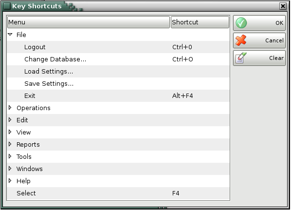

Key Shortcuts
In the window Key shortcuts is created for the configuration of the so called �fast keys�, whose main purpose is to make the work of the operator faster and easier. According to your needs you can create your own list with keyboard shortcuts or to edit the existing ones.
In the window are displayed all possible operations, for which you can create keyboard shortcuts.
With the button OK you confirm the change.
With the button Clear button the changes will not be saved and the default settings will be restored.

�2006-2015 Microinvest, All rights reserved